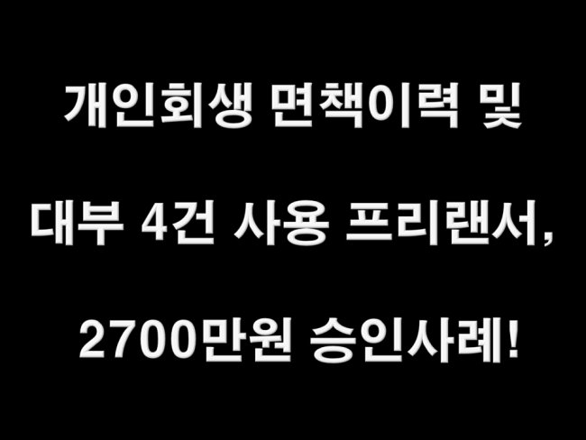
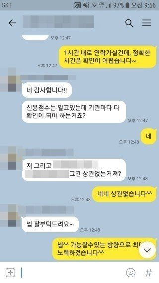
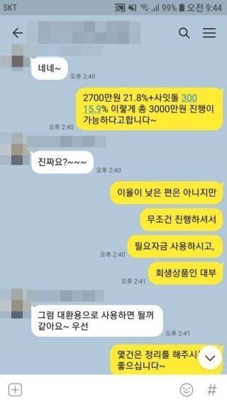
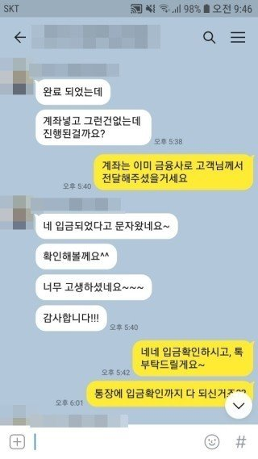
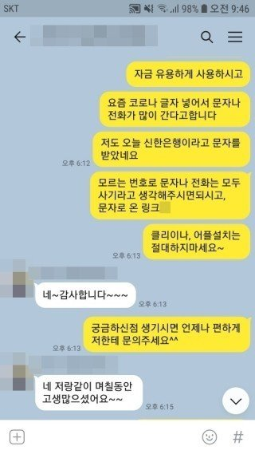

개인회생 면책이력 및 대부 4건 사용 프리랜서, 2700만원 승인사례!

안녕하세요^^ 뱅크앤론 상담사 유미광 과장입니다^^ 오늘은 제가 진행해드린 강** 고객님의 대출 사례를 소
개해 드리겠습니다. 강** 고객님께서는 현 직장에 6개월째 근무중이시며, 월소득 300만원의 프리랜서이셨습
니다. 사용중이신 대출로는 하나은행 905만원, 조이크레디트 1120만원, MSI대부 750만원, 안전대부 500만원,
아이앤유 350만원을 이용중이셨습니다. 회생중 받으셨던 대부를 대환하고 싶으셔서, 뱅크앤론으로 문의주셨
다고하셨습니다. 프리랜서직군으로 재직기간도 짧으셨고, 회생면책이력 및 대부4건을 이용중이셨기에 쉬운 상
황은 아니셨지만, 최근 급격히 승인률이 높아진 금융사쪽으로 조회해드려, 2700만원이 21.8%에 진행 가능하시
다는 결과를 받았습니다. 이율이 낮은 편은 아니셨지만, 우선 대부를 정리하고싶으셨던 고객님의 자금 필요목적
에 부합되어, 강** 고객님께서도 매우 만족하셨습니다. 최근 해당 금융사의 심사량이 많아 승인까지는 타 금융
사에 비해 오래걸렸지만, 안전하게 입금까지 받으실 수 있었습니다. 자세한 사항은 아래 저와 강** 고객님의
카톡대화 내용을 참고하실 수 있습니다. 감사합니다^^



